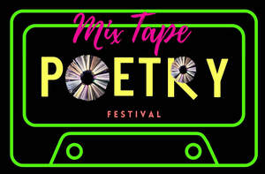

Trade Mark Journal No.2025/039 26 September 2025
UK00004263850 14 September 2025 (9,16,25,35,36,39,40,41,42,43)

- Class 9
- Audio books; Talking books; Downloadable electronic books; Music recordings; Pre-recorded CDs featuring music; Musical video recordings; Musical recordings.
- Class 16
- Writing books; Music books; Fiction books; Writing or drawing books; Graphic art books; Song books; Non-fiction books; Novels; Romance novels; Printed music books; Blank writing journals; Music magazines; Writing brushes for calligraphy; Composition books; Printed periodicals in the field of figurative arts; Painting books; Works of art of paper; Series of fiction books; Manuscript books; Writing brush calligraphy copybooks; Art etchings; Writing implements [writing instruments]; Writing paper; Papers for painting and calligraphy; Writing materials; Writing instruments; Graphic novels; Writing stationery; Art paper; Books featuring fantasy stories; Story books; Fantasy books; Blank journal books; Sketch books; Books; Drawing books; Event albums; Souvenir event programs; Event programs; Educational books; Educational publications; Series of non-fiction books; Books for children; Printed books; Covers for books; Wirebound books; Picture books; Gift books; Cook books; Information books; Children's books; Books featuring fictional stories; Stationery; Envelopes [stationery]; Paper stationery; Printed stationery; Stickers [stationery]; Office stationery; Office paper stationery; Pads [stationery]; Party stationery; Writing cases [stationery]; Notepads; Letterhead paper; Notepaper; Letterheads; Letter paper; Postcard paper; Paper book markers; Printed stories in illustrated form; Writing paper pads; Notebook paper; Book marks; Book-cover paper; Letter paper [finished products]; Watercolor paintings; Rubbers for erasing written text; Picture postcards; Watercolor pictures; Paper gift tags; Book wrappings; Works of art made of paper; Birthday books; Gift paper; Book bindings; Paintings [pictures], framed or unframed; Blank paper notebooks; Recipe books; Postcards and picture postcards; Watercolors [paintings]; Comic books; Colouring books; Reference books; Baby books [storybooks]; Poster books; Guide books; Commemorative books; Jackets of paper for books; Manga comic books; Activity books; Note books; Pop-up books; Covering materials for books; Coloring books for adults; Events albums; Events programmes; Printed music; Printed books in the field of music education; Music note books; Cookery books; Copy books; Coloring books; Autograph books; Hymn books; Travel books; Ledger books; Index books; Religious books; Covers for cheque books; Prayer books; Guest books; Hand books; Memorandum books; Scrap books; Flip books; Data books; Coupon books; Sticker books; Exercise books; School writing books; Dictation books; Account books; Agenda books; Date books; Bill books; Log books; Baby books; Rule books; Visitors books; Appointment books; Signature books; Wedding books; Score books; Telephone books; Address books; Expense books; Pocket books [stationery]; Manga graphic novels; Comic magazines; Comics; Book jackets; Printed event admission tickets; Tickets; Book markers; Book ends.
- Class 25
- Short-sleeved T-shirts; Clothing.
- Class 35
- Writing of publicity texts; Publicity texts (Writing of -); Texts (Writing of publicity -); Publication of advertising literature; Subscriptions (arranging of) to books, reviews, newspapers or comic books; Promotion of musical concerts; Event marketing; Promotion [advertising] of concerts; Publicity publication services; Publication of publicity texts; Publicity texts (Publication of -); Texts (Publication of publicity -); Publication of advertising texts; Arranging and conducting trade shows relating to publishing; Publication of publicity materials on-line; Publication of publicity materials; Publication of publicity material; Advertising services for the literary industry; Business management of authors and writers; Publication of publicity materials and texts; Bill-posting; Retail services in relation to stationery supplies; Retail services connected with stationery; Marketing; Advertising and marketing; Promotional marketing; Advertising and marketing consultancy; Advertising, marketing and promotion services; Marketing, advertising and promotion services; Influencer marketing; Advertising, marketing and promotional services; Advertising, promotional and marketing services; Marketing, advertising, and promotional services; Advertising and marketing services; Product marketing; Distribution of advertising, marketing and promotional material; Marketing consultancy; Promotion [advertising] of business; Promotion, advertising and marketing of on-line websites; Marketing research; Business marketing consultancy; Digital marketing; On-line advertising and marketing services; Marketing studies; Marketing services; Dissemination of advertising, marketing and publicity materials; Internet marketing; Financial marketing; Marketing forecasting; Business marketing services; Consultancy services relating to advertising, publicity and marketing; Marketing consulting; Advertising services for the promotion of e-commerce; Promotional marketing services using audiovisual media; Affiliate marketing; Creative marketing plan development services; Rental of all publicity and marketing presentation materials; Advertising, marketing and promotional consultancy, advisory and assistance services; Marketing research services; Modelling for advertising or sales promotion; Organization of events, exhibitions, fairs and shows for commercial, promotional and advertising purposes; Publicity and sales promotion services; Design of marketing surveys; Planning services for marketing studies; Marketing agency services; Organization of fashion parades for sales promotion purposes; Brand creation services (advertising and promotion); Publicity and sales promotion; Cinema advertising; Trade marketing [other than selling]; Promotion [advertising] of travel; Database marketing; Modeling for advertising or sales promotion; Advertising planning; Marketing plan development ; Modeling services for advertising or sales promotion; Research services relating to advertising and marketing; Market research and marketing studies; Consultancy services in the field of affiliate marketing; Advertising and publicity; Publicity and advertising; Advertising copywriting; Planning of marketing strategies; Planning and conducting of trade fairs, exhibitions and presentations for commercial or advertising purposes; Sales promotion using audiovisual media; Preparation of marketing surveys; Planning and conducting of trade fairs, exhibitions and presentations for economic or advertising purposes; Organization of fairs and exhibitions for commercial and advertising purposes; Advertising and promotion services; Marketing advisory services; Advertising and publicity services; Organisation of exhibitions and trade fairs for business and promotional purposes; Arranging and conducting of marketing events; Marketing information; Production of advertising films; Copywriting for advertising and promotional purposes; Business marketing consulting services; Business consultancy services relating to the marketing of fund raising campaigns; Organisation of exhibitions and trade fairs for commercial and advertising purposes; Organisation of exhibitions and trade fairs for commercial or advertising purposes; Organisation of trade fairs and exhibitions for commercial or advertising purposes; Organisation of exhibitions or trade fairs for commercial or advertising purposes; Developing promotional campaigns for business; Marketing analysis; Market research for advertising; Arranging and conducting marketing promotional events for others; Business management of entertainment venues; Development of marketing concepts; Advertising and promotional services; Promotional and advertising services; Promotional advertising services; Organization of exhibitions and trade fairs for commercial or advertising purposes; Investigations of marketing strategy; Organisation of exhibitions and events for commercial or advertising purposes; Targeted marketing; Development of promotional campaigns; Providing marketing consulting in the field of social media; Preparation of advertising campaigns; Organisation of trade fairs for advertising purposes; Organization of fairs for commercial and advertising purposes; Arranging and conducting of fairs and exhibitions for business and advertising purposes; Promotional advertising for exploration projects; Advertising and marketing services provided by means of social media; Business marketing consultation services; Direct marketing; Consulting services in the field of Internet marketing; Referral marketing; Organisation of trade fairs for commercial or advertising purposes; Business promotion; Conducting of marketing studies; Conducting marketing studies; Production of video recordings for marketing purposes; Video recordings for marketing purposes (Production of -); Advice in the field of business management and marketing; Planning services for advertising; Advertising flyer distribution; Marketing in the framework of software publishing; Organising exhibitions for commercial or advertising purposes; Marketing assistance; Direct marketing services; Consultancy relating to the organisation of promotional campaigns for business; Organization of trade fairs for commercial or advertising purposes; Trade fairs (Organization of -) for commercial or advertising purposes; Organization of art exhibitions for commercial or advertising purposes; Preparation of marketing plans; Cinematographic film advertising; Outdoor advertising; Organisation of customer loyalty programs for commercial, promotional or advertising purposes; Advertising; Merchandising; Product merchandising; Merchandizing; Business merchandising display services; Product merchandising for others; Preparing promotional and merchandising material for others; Sales promotion; Sales promotion through customer loyalty programs; Sales promotion services; Online marketing; Online retail store services relating to clothing; Display services for merchandise; Online retail store services in relation to clothing; Organization, operation and supervision of sales and promotional incentive schemes; Retail services in relation to fashion accessories; Production of visual advertising matter; Distribution of advertising material; Administration of sales and promotional incentive schemes; Distribution of products for advertising purposes; Mail-order advertising; Distribution of advertising brochures; Administration of sales promotion incentive programs; Development of marketing strategies and concepts; Production of advertising material; Management of customer loyalty, incentive or promotional schemes; Consultancy relating to business advertising; Sales account management; Distribution of advertising materials; Consultancy relating to advertising and promotion services; Advertising particularly services for the promotion of goods; Direct marketing consulting; Consulting services in the field of development of advertising concepts; Administration relating to marketing; Graphic advertising services; Arranging and conducting of fairs and exhibitions for business purposes; Distribution of publicity materials (flyers, prospectuses, brochures, samples, particularly for catalogue long distance sales) whether cross border or not; Design of advertising logos; Advertising services to create corporate and brand identity; Brand positioning; Advertising services to create brand identity for others; Design of advertising brochures; Design of advertising flyers; Brand creation services; Copywriting; Corporate identity services; Design of advertising materials; Customer loyalty services for commercial, promotional and/or advertising purposes; Consumer profiling for commercial or marketing purposes; Brand testing; Press advertising consultancy; Banner advertising; Advertising, promotional and public relations services; Collection of information relating to market studies; Advertising text publication services; Market research services for publishers; Retail services connected with the sale of clothing and clothing accessories; Promotion of special events; Arranging promotion of charitable fundraising events; Arranging and conducting of promotional events; Conducting of commercial events; Message transcription.
- Class 36
- Charitable fundraising by means of entertainment events.
- Class 39
- Transportation of books.
- Class 40
- Printing of books; Covering of books; Binding of books or documents; Stationery printing services.
- Class 41
- Writing of texts; Writing and publishing of texts, other than publicity texts; Writing of texts, other than publicity texts; Texts (Writing of -), other than publicity texts; Writing of texts [other than publicity texts]; Publication of instructional literature; Multimedia publishing of books; Publishing, reporting, and writing of texts; Publication of audio books; Performance of dance, music and drama; Publication of text books; Publication of books, magazines, almanacs and journals; Multimedia publishing of journals; Publishing of stories; Organising of festivals relating to jazz music; Publication of periodicals and books in electronic form; Publishing of books; Creation [writing] of podcasts; Publishing of books, magazines; Publication of texts; Writing services for blogs; Art exhibitions; Publication of books; Books (Publication of -); Editing of written texts, other than publicity texts; Multimedia publishing of magazines, journals and newspapers; Publishing of electronic books and journals online; Editing of written texts; Publishing of instructional books; Publishing of journals; Publishing of electronic books and journals on-line; Publishing services for books and magazines; Online publication of electronic books and journals; Publication of electronic books and journals online; Online electronic publishing of books and periodicals; Music performances; Book publishing; Publication of books relating to entertainment; Providing online non-downloadable comic books and graphic novels; Music festival services; Publication of texts, other than publicity texts; Texts (Publication of -), other than publicity texts; Performance of music and singing; On-line publication of electronic books and journals; Publication of electronic books and journals on-line; Multimedia publishing of magazines; Publishing services for books; Art exhibition services; Organising of festivals; Organisation of festivals; Conducting of film festivals; Entertainment in the nature of ethnic festival; Conducting of performing arts festivals; Organisation of music concerts; Festivals (Organisation of -) for entertainment purposes; Festivals (Organisation of -) for cultural purposes; Production of music concerts; Music concerts; Organisation of musical concerts; Arranging of festivals for cultural purposes; Presentation of music concerts; Presentation of musical concerts; Production of sporting events for film; Pop music concerts (Organisation of -); Arranging of festivals for entertainment purposes; Organising community cultural events; Live musical concerts; Organisation of concerts; Live music concerts; Organizing cultural and arts events; Organising of theatre productions; Organisation of musical events; Music concert services; Dance events; Organisation of entertainment and cultural events; Presentation of concerts; Festivals (Organisation of -) for recreational purposes; Entertainment in the nature of live performances by musical bands; Organising of entertainment competitions; Organising of competitions for entertainment; Competitions (Organising of entertainment -); Hosting of entertainment events; Musical concert services; Organizing community sporting and cultural events; Theatre and concert tickets reservation services; Reservation services for concert and theatre tickets; Theatre performances; Artistic management of music venues; Live musical theater performances; Festivals (Organisation of -) for educational purposes; Rental of concert halls; Concert booking; Organisation of live musical performances; Organising dancing events; Organisation of musical competitions; Production of live entertainment events; Presentation of live performances by musical bands; Organisation of musical performances; Entertainment services in the form of concert performances; Entertainment in the nature of orchestra performances; Live dance exhibitions; Entertainment in the nature of symphony orchestra performances; Arranging of festivals for training purposes; Entertainment in the nature of live dance performances; Ticket reservation and booking services for music concerts; Organisation, production and presentation of theatrical performances; Musical concerts by television; Live music performances; Ticket reservation for cultural events; Presentation of live Christmas musical productions; Organisation of entertainment events; Theatrical performances; Theatrical shows provided at performance venues; Exhibition of cine films; Booking of performing artists for events (services of a promoter); Consultancy on film and music production; Theater performances; Live performances by a musical bands; Musical concerts by radio; Organisation of musical entertainment; Presentation of circus performances; Organisation of cultural events; Arranging of festivals for educational purposes; Preparing subtitles for live theatrical events; Production of revue shows before live audiences; Entertainment services in the nature of live performances of roller skating exhibitions and competitions; Live performances by a musical band; Entertainment in the nature of theater productions; Presentation of live entertainment events; Theatre entertainment; Musical performances; Production of music shows; Musical events (Arranging of -); Arranging of musical events; Production of theatrical performances; Movie theatre presentations; Organisation of entertainment competitions; Conducting of cultural events; Booking of seats for entertainment events; Live band performances; Band performances (Live -); Arranging of music performances; Arranging and conducting of music concerts; Organising of entertainment; Dancing competitions (Organising of -); Organising of dancing competitions; Production of music; Music production; Hosting [organising] awards; Preparation of entertainment programmes for the cinema; Theatre productions; Live musical performances; Presentation of theatrical performances; Organising of stage shows; Conducting of live entertainment events; Entertainment in the nature of ballet performances; Ice-skating events (Organising of -); Presentation of live dance performances; Conducting of entertainment events; Rental of costumes [theatrical or masquerade]; Conducting entertainment exhibitions in magic shows; Cinema entertainment; Publishing; Newspaper publishing; Publishing of newspapers; Magazine publishing; Multimedia publishing; Publishing of newsletters; Publishing of electronic publications; Music publishing; Publishing of music; Electronic publishing; Publishing of documents; Publishing of medical publications; Publishing services; Multimedia publishing of newspapers; Publishing of web magazines; Publishing of reviews; Publishing of maps; Multimedia publishing of electronic publications; Publishing of scientific papers; Publishing of books and reviews; Publishing services (including electronic publishing services); Song publishing; On-line publishing services; Electronic desktop publishing; Book and review publishing; Electronic publishing services; Music publishing services; Publishing services for periodical and non-periodical publications, other than publicity texts; Multimedia publishing of printed matter; Publishing of educational material; Publishing services, except printing; Publishing of printed matter; Publishing of musical works; Publishing of educational matter; Electronic publishing services for others; Online digital publishing services; Electronic text publishing services; Publishing a newspaper for customers on the Internet; Publication of journals; Services for the publication of books; Publishing of magazines in electronic form on the Internet; Publishing by electronic means; Publication of educational books; Advisory services relating to publishing; Desk top publishing; Publication of music books; Publication of newspapers; Publication of magazines; Magazines (Publication of -); Publishing of scripts for theatrical use; Newspaper publication; Publication of periodicals; Services for the publication of magazines; Electronic online publication of periodicals and books; Publication of music; Publication and editing of printed matter; Publication of electronic magazines; On-line publication of electronic books and journals (non-downloadable); Publication of textbooks; Publication services; Publication of work manuals for business management; Publication of electronic books and periodicals on the Internet; Music publishing and music recording services; Publication of consumer magazines; Online publication of electronic newspapers; Services for the publication of guide books; Lending of books and other publications; Publication of catalogs; Electronic publication; Publication of books, reviews; On-line publication of electronic books and journals [not downloadable]; Publication of educational texts; Publication of printed directories; Electronic publication services; Publication of year books; Publication of directories relating to travel; Publication of multimedia material online; Publication of catalogues; Publication of scientific information journals; Services for the publication of newsletters; Musical entertainment; Arranging of visual and musical entertainment; Writing screenplays; Cultural activities; Organisation of animal exhibitions for cultural or educational purposes; Artistic management of entertainment venues; Entertainment, sporting and cultural activities; Organisation of exhibitions for cultural and educational purposes; Organisation of exhibitions for cultural or educational purposes; Organization of exhibitions for cultural or educational purposes; Exhibitions (Organization of -) for cultural or educational purposes; Organization of exhibitions for cultural and educational purposes; Cultural services; Interviewing of contemporary figures for educational purposes; Interviewing of contemporary figures for entertainment purposes; Arranging of exhibitions for cultural or educational purposes; Publication of printed matter, other than publicity texts, in electronic form; Jazz music entertainment services; Direction of music performances; Performance of music; Publication of lyrics of songs in book form; Male dance exhibitions; Conducting workshops and seminars in art appreciation; Conducting of workshops and seminars in art appreciation; Entertainment services in the form of cinema performances; Exhibition of video films; Performing of music and singing; Presentation of live comedy performances; Presentation of musical performances; Music entertainment services; Entertainment by means of theatre productions; Song writing services; Entertainment services in the form of musical vocal group performances; Organisation of artistic competitions; Entertainment in the nature of live performances by rock groups; Screenplay writing; Publication of musical texts; Editing of written text; Written text editing; Motion picture song production; Political speech writing; Portrait painting; Translation and interpretation; Translation; Language translation; Braille translation; Preparation of texts for publication; Publication of sheet music; Consultation services relating to the publication of written texts; Script writing services; Publication of photographs; Publication of printed matter, other than publicity texts; Portrait painting services; Organisation of conferences, exhibitions and competitions; Fun fairs; Arranging of cultural events; Arranging of concerts; Entertainment in the nature of dance performances; Organisation of events for cultural, entertainment and sporting purposes; Organising of galas; Organising of exhibitions for entertainment purposes; Entertainment by means of concerts; Organising events for entertainment purposes; Organising of recreational events; Arranging and conducting of live entertainment events; Organising competitions; Organising of games and competitions; Entertainment services in the form of musical group performances; Entertainment in the nature of dinner theater productions; Music competition services; Music education; Entertainment in the nature of gymnastic performances; Entertainment in the nature of wrestling contests; Organising of sports competitions and events; Entertainment in the nature of competitions in the field of spelling; Organisation of entertainment activities for summer camps; Publishing scientific papers in relation to medical technology; Publishing of scientific papers in relation to medical technology; Publication of texts in the form of electronic media; Publication of documents in the field of training, science, public law and social affairs; Publication of online reviews in the field of entertainment; Multimedia entertainment software publishing services; Organization of cosplay entertainment events; Organisation of sporting events and competitions; Organization, production and presentation of theatrical performances; Concert services; Singing concert services; Booking agencies for concert tickets; Reservation services for concert tickets; Concert booking services; Ticket reservation services (Concert -); Management of concerts; Booking of seats for concerts; Presentation of live performances by a musical group; Presentation of orchestra performances; Live band performance services; Arranging and conducting of concerts; Conducting of concerts (Arranging and -); Musical floor shows provided at performance venues; Presentation of live performances by rock groups; Live music shows; Presentation of live show performances; Provision of live musical performances; Live performances by rock groups; Presentation of live entertainment performances; Performances (Presentation of live -); Live performances (Presentation of -); Presentation of live performances; Arranging, conducting and organisation of concerts; Theatrical floor shows provided at performance venues; Symphony orchestra services; Provision of facilities for live band performances; Live stage shows; Recording of music; Music recording; Organisation of live performances; Presentation of musical performance; Arranging of music shows; Performance of musical programmes; Arranging and presenting of live performances; Booking of seats for shows and booking of theatre tickets; Production of live performances; Entertainment services performed by a musical group; Arranging for ticket reservations for shows and other entertainment events; Planning of plays or musical shows; Organisation of ice skating shows for live audiences; Live music services; Production of stage performances; Music performance services; Booking agencies for theatre tickets; Rehearsal [recording] studio services; Presentation of recitals; Presentation of live comedy shows; Music recording studio services; Production of musical recordings; Production of entertainment shows featuring singers; Provision of live music; Production of entertainment shows featuring dancers and singers; Rendering of musical entertainment by vocal groups; Special event planning; Special event planning consultation; Organization of entertainment events; Organization of dancing events; Ticketing and event booking services; Publication of calendars of events; Organisation of educational events; Organization of events for cultural purposes; Ticket information services for entertainment events; Arranging of educational events; Disc jockeys for parties and special events; Ticket reservation and booking services for cultural events; Conducting of educational events; Entertainment services provided during intervals at sports events; Booking of sports personalities for events (services of a promoter); Booking of seats for shows and sports events; Provision of recreational events; Arranging and conducting of entertainment events; Arranging and conducting of entertainment events for charitable fundraising purposes; Publication of lyrics of songs in sheet form; Mural art painting services; Proof reading of manuscripts.
- Class 42
- Design of stationery; Design of clothing, footwear and headgear; Designing of clothing; Design of clothing; Design of clothing accessories; Graphic design; Design of artwork; Design of prototypes; Visual design; Design consultancy; Website design; Design and graphic arts design for the creation of web sites; Brochure design; Website design and development; Design of products; Graphic art design; Graphic illustration design; Design services; Design (Graphic arts -); Graphic arts design; Art work design.
- Class 43
- Providing facilities for fairs and exhibitions.
Shadia Ousta Doerfel